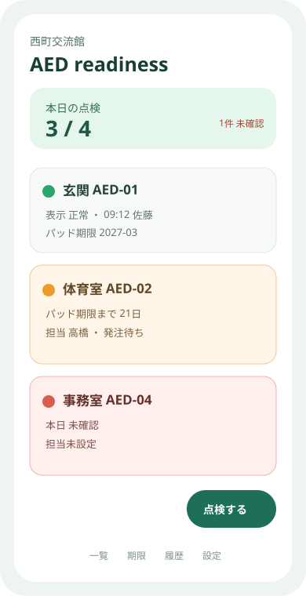
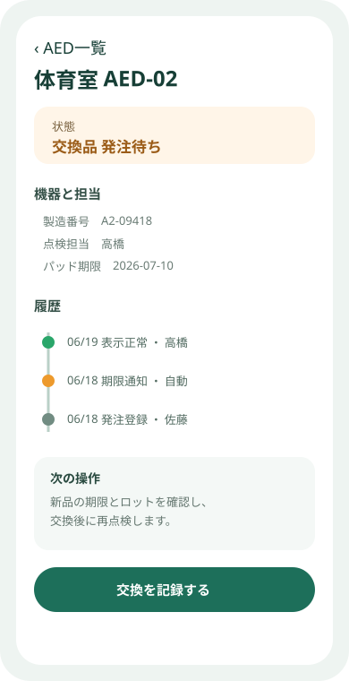

Question Note
AEDの日常点検と消耗品交換を閉じる小規模サービス案


全体像
厚生労働省は、AED設置者に点検担当者の配置、インジケータの日常確認、電極パッドとバッテリの交換時期確認を求めています。課題は設置台数ではなく、担当交代、期限通知、異常時の停止表示、交換完了の証跡が一台単位で閉じないことです。
どの社会問題を切り出すか
初年度はAEDを2〜20台保有する体育館、事業所、地域施設に絞ります。
| 現場課題 | 結果 | 既存手段の限界 |
|---|---|---|
| 担当が曖昧 | 表示確認が抜ける | 紙の点検表は未実施を通知しない |
| 期限が別管理 | パッドや電池の交換が遅れる | カレンダーは機器・ロット・発注を結べない |
| 異常後の復旧が不明 | 使用不能状態が残る | 電話やチャットは再開確認の証跡になりにくい |
サービス案と中核ワークフロー
QRコードで一台を開き、表示、封印、パッド、バッテリを30秒で確認する限定台帳です。
- 担当者がQRを読み、インジケータ状態を記録する。
- 異常または期限接近なら管理者へ割り当てる。
- 発注、交換、旧品処理、再点検を履歴化する。
- 未確認と使用停止中だけを一覧で追う。
紙、表計算、チャットでは、未実施の自動抽出、機器固有の期限、担当交代、復旧証跡を同時に扱いにくいため、専用の状態遷移に価値があります。医療判断や救命講習は代替しません。
100万円規模に抑えた市場設定
| 到達可能市場 | 地域の施設・事業所60拠点へ直接提案 | 一人で訪問支援できる範囲 |
|---|---|---|
| 月額 | 20拠点 x 4,000円 x 12か月 | 960,000円 |
| 導入支援 | 6拠点 x 10,000円 | 60,000円 |
| 初年度売上 | 合計 | 1,020,000円 |
AWSシステム要件と支出
東京リージョン、1 USD = 150円、無料枠・クレジット除外、20拠点、200 MAU、AED 200台の概算です。実装前にAWS Pricing Calculatorで再計算します。
| AWSリソース | 用途 | 想定使用量 | 月額 | 年額 |
|---|---|---|---|---|
| Amazon S3 | Web画面、説明書、点検写真 | 5GB | 300円 | 3,600円 |
| Amazon CloudFront | 画面と写真の安全な配信 | 月10GB | 500円 | 6,000円 |
| Amazon Cognito | 点検者・管理者認証 | 200 MAU | 300円 | 3,600円 |
| Amazon API Gateway | 点検・交換API | 月2万件 | 300円 | 3,600円 |
| AWS Lambda | 期限判定、割当、月次報告 | 月2万実行 | 300円 | 3,600円 |
| Amazon DynamoDB | 施設、AED、製造番号、設置場所、担当、表示状態、パッド・電池期限、発注、交換、停止・復旧、監査履歴 | 1GB、月5万読書き | 500円 | 6,000円 |
| Amazon SES | 未点検・期限・異常通知 | 月2,000通 | 100円 | 1,200円 |
| Amazon CloudWatch | 通知失敗とAPI異常監視 | ログ1GB、4アラーム | 400円 | 4,800円 |
| AWS Backup | 台帳と履歴の日次復旧 | 5GB | 300円 | 3,600円 |
| AWS Budgets | 月額上限通知 | 2予算 | 100円 | 1,200円 |
| Amazon Route 53 | 独自ドメインDNS | 1ゾーン | 100円 | 1,200円 |
| AWS合計 | 小規模時の予算上限 | 3,200円 | 38,400円 | |
AIを使った開発見積もり
| 要件整理 | 点検票と状態遷移の初稿 | 1週 |
|---|---|---|
| 試作 | QR、一覧、詳細、期限通知 | 2週 |
| 本実装 | 権限、履歴、帳票、テスト補助 | 3週 |
| 検証 | 現場受入と復旧シナリオ | 2週 |
AIなしの約12週を約8週へ短縮する仮説です。機器メーカーの手順、表示の解釈、責任範囲は人が確認します。
売上・支出・利益
売上 - 支出 = 利益
| 売上 | 1,020,000円 | 月額 + 導入支援 |
|---|---|---|
| 支出 | 128,400円 | AWS 38,400円、医療機器・規約確認60,000円、QR資材・営業30,000円 |
| 利益 | 891,600円 | 事業主の人件費・税引前 |
必要人数と人材要件
開発・導入1名 + 単発専門確認です。実行者はWeb実装と現場設定を担い、医療機器の表現、利用規約、アクセシビリティを専門家へ確認します。
リスクと最初の検証
- アプリ確認が実物確認の代替だと誤認されない表示にする。
- QRだけを読んで点検済みにする不正を、項目順と短い写真で抑える。
- メーカーごとの期限・表示差を導入時に確認する。
3施設・20台・8週間で、点検実施率、期限超過、異常から復旧までの日数、月額支払い意思を測ります。